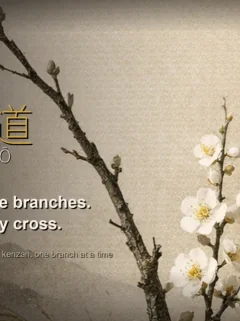
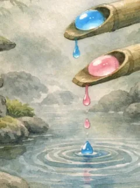

游戏
-
0018KADŌ — 禅意插花解谜 益智KADŌ 是一款围绕剑山展开的静谧插花解谜游戏。剑山，是插花的人把花枝与花茎按进去、布满钢针的金属座台。你不会用手直接拖动花枝：从底部的花材卡里挑出一根，转动一个大大的角度转盘来决定它倾斜的角度（转盘会咔地卡进一组规整的角度上），再点一下剑山上空着的插孔，把它安放在那里。一幅完成的花艺要同时满足两条规则：任意两根花枝的枝线都不能相交；而每一根枝都归属于三才之一——天几乎笔直向上，人斜斜地探出，地低低地伏下。每一关都只有一种正确的花艺，而且总能靠推理、而不是运气抵达；卡住时，参考提示会揭示某一根枝的正确角度，有限次数的撤销让你退回一步、重新思考。200 个手工验算的关卡、随季节流转的背景，以及 12 种语言。现已在 Roblox 上线；Android 正在 Google Play 招募测试员；App Store 即将推出。
-
0017HANKO — 禅意篆刻逻辑谜题 益智HANKO 是一款静谧的日式篆刻逻辑谜题，它的思路刻意反着来：你不去雕刻的部分，才是会印出来的部分。点击格子，在印面上刻出沟槽；留下的凸起会沾上朱红的墨，落在下方的和纸上，捺进一到四个固定的押印框内。被一个框覆盖的格子印出淡红，两次印痕重叠之处墨色加倍，化为浓重的深红，因此你印出的图案必须与目标完全一致——空白、淡红还是深红都要吻合。每次按压之后，系统只会告诉你有多少格子太深、有多少格子太淡，绝不替你点出是哪一格。雕刻不可逆，所以下刀之前先谋划。200 个手工校验的关卡、带连胜的每日一印、一本印谱，以及 12 种语言。现已在 App Store 和 Roblox 上线；Android 正在 Google Play 招募测试员。
-
0016Hoshikari（星狩）— 锁定星群，放出光矢，猎取繁星。 Space Shooter一款水墨风格的第一人称在轨宇宙射击游戏。拖动手指为迎面而来的流星与无人机星群涂上锁定，松手即放出扇形自动追踪光箭，一息之间连锁猎尽整群。飞越从出击到深渊的各个区域，用护盾抵挡打击，驾驭超载冲刺，挑战无尽流星风暴。现已登陆 App Store 和 Roblox；Google Play 正在招募安卓测试员。
-
0015Okaeri — 温暖的宠物回家滑动益智游戏 益智Okaeri 是一款温暖的宠物回家滑动益智游戏。滑动一行或一列玻璃食碗，食碗会从边缘绕到另一侧。当整条线变成同一种宠物最爱的食物时，宠物会穿过棋盘。随后旋转等待在外圈的宠物和主人，让相配的主人等在另一边。让所有配对重逢即可通关。安静关卡、无计时器、支持12种语言。 现已登陆 App Store 和 Roblox；Google Play 正在招募安卓测试员。
-
0014Shizuku — 布置庭园，让两滴露珠相遇。 益智Shizuku 是一款治愈系确定性物理解谜游戏，背景设于静谧的日式庭园。你永远不会触碰露珠——而是布置棋盘：摆放竹槽、石头和落叶，让两滴落下的露珠滚动、滑行，最终相遇合而为一。布置好场景，释放露珠，看着你的计划徐徐展开。由于一切皆非随机，你可以在放手之前把整个流程想清楚。宁静、手工打造的关卡，没有时间压力。支持12种语言。 现已登陆 App Store 和 Roblox；Google Play 正在招募安卓测试员。
-
0013SENKO — 抚平烟雾，凝定宁静。 益智SENKO 是一款治愈系的两阶段烟雾解谜游戏。点燃一炷香，躁动的黑烟随之升起 — 用手指轻拂使其平静，直到沉淀下来，化为清澈的白烟。然后引导这缕白烟，填满若隐若现的和风图案：月亮、松树、仙鹤、樱花等等，共120个静谧关卡。留心红色火星 — 碰到它就会灼回你的烟雾，所以要灵巧地绕开。烟雾有限，要在香烧尽之前把它塑成形。扇子能大范围抚平，笔则助你勾勒形状。毫无压力，支持12种语言。 现已登陆 App Store 和 Roblox；Google Play 正在招募安卓测试员。
-
WAGASHI: Knead & Craft 是一款围绕「揉制」这门手艺的温暖治愈日式和菓子益智游戏。和菓子相碰不会合成——放下一颗只是备好材料。当两颗相同的并肩挨在一起，这一堆会被一圈脉动的金色光环圈起；长按便把整堆一次性揉成更高一级（六颗变三颗），沿着十级链条，从小小的 azuki 红豆一路成长为隆重的 kagami-mochi。揉制不消耗步数，而得分取决于揉制时这一堆有多大、靠得有多紧，所以团扇和筷子是用来在揉制前聚拢整堆的。两种玩法：宁静无尽的 Zen 模式，或是 200 个订单关卡，在有限投放次数内完成。没有压力，支持 12 种语言。现已在 App Store 和 Roblox 上线；Android 正在 Google Play 招募测试员。
-
0011CounterParts — 一次滑动，双子同动。 益智暖心极简的镜像双子方格解谜。一次滑动同时移动两个分身——Gold（温暖金色玻璃水滴）与 Platinum（冷调银白色玻璃水滴）——各自朝点对称的相反方向移动一格。墙壁和边缘只挡住其中一个，便可利用这种错位，在黄铜数取器中让两者都停在各自同色的穴中。120 关、7 个族系。免费，PixelRyu 出品。现已登陆 App Store 与 Roblox — Android 正在 Google Play 公开测试中。
-
0010TATAMI — 铺好畳席，领取赏赐。 益智在宁静的和室里铺畳的方块拼图，让人放松。把畳席拖到地板上，填满一整行或一整列即可完成该行。随后武士会扛起铺好的畳席送到官老爷那里，呈交后可获得金币，攒下的金币能换取额外的命。轻巧的「赶工」槽让节奏保持流畅。还有吉利的铺法奖励。共 48 关。基础免费，PixelRyu 制作。 现已登陆 App Store 和 Roblox；Google Play 正在招募安卓测试员。
-
0009TEMARI — 用羽子板击回手鞠，击破纸气球。 动作以宁静和风之夜为舞台的第一人称拍板打砖块。用指尖移动羽子板，让手鞠不断对打不落，击破长廊深处的纸气球。还有分裂、专注慢动作、雉鸡帮手等玩法。共 8 个世界、200 关。App Store 现已上线。
-
一款暖心的迷宫脱出解谜。从迷宫外发射毛线，借助反弹，推开或击碎墙壁，让被困的小猫自己找到逃生之路——全 200 关、横跨 10 个世界。Roblox 与 App Store 现已上线。招募 Android 测试员。
-
0007HAYATE — 极速飞驰，利落斩落，率先冲线。 动作一款 3D 武士刀竞速游戏，ISSEN 的续作。躲开迎面飞来的一切，或掷出你的追踪武士刀将其利落斩断——横跨四大世界、四十个关卡，外加无尽模式。App Store 现已上线。招募 Android 测试员。
-
0006Sumlings — 摆放数字，孵化奇迹。 益智治愈系数字益智游戏。把数字蛋放进小箱庭，让每个巢的合计与目标一致——孵化 Sumling，集齐图鉴。App Store 现已上线。招募 Android 测试员。
-
0005Parcel Pals — 把幸福装进盒子，把笑容送出门 益智治愈系包裹分拣益智游戏。把可爱的小包裹分进 3 条传送道，对准传送带上的盒子形状出货，别让桌面爆满。招募 Android 测试员。
-
0004ISSEN（一闪）— 一息,一斩 动作以居合拔刀为核心的水墨节奏动作游戏。调匀呼吸,看准间距,挥出一笔完美的斩击。App Store 现已上线。招募 Android 测试员。
-
0003HOTARU — 失落的屋舍 动作美丽的日式恐怖步行模拟。追逐萤火,将它们汇聚于行灯,投向妖怪 — 在天明前找到后门。
-
0002Liquid Glow 益智一款置身深邃宇宙、静谧而璀璨的配色解谜。轻点一颗发光的星，再点一颗相连的星，让光芒沿着星座滑行，直到每个光环都对上自己的颜色。现已登陆 App Store 和 Roblox——经典的排序解谜则在 Android 上。
-
0001モグラぽかぽか (打地鼠) 动作拍打冒出的鼹鼠，达成每一关的目标，闯过越来越快的100个关卡。现已登陆 App Store 和 Roblox；Google Play 正在招募安卓测试员。
18款游戏
12种语言
3个平台